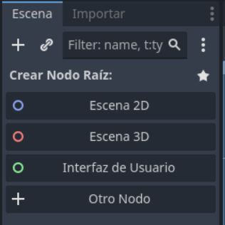

Escena Principal
La escen principal, será nuestro contenedor donde estarán los elementos del juego e incluso otras escenas. Algunas las crearemos en el propio editor, otras las crearemos en tiempo de ejecución.
Como hemos comentado, las escenas contienen Nodos que pueden ser propios del editor, e incluso otras escenas.
En primer lugar, vamos a crear la escena principal; haciendo click en el menú escena-> Nueva escena.
Nos creará una escena vacia, y en la parte izquierda en el árbol de nodos nos pedirá que seleccionemos el nodo inicial.
Seleccionaremos Nodo 2D; para crear como nodo inicial un Nodo 2D; recuerda que puedes trabajar en 2D y 3D pero en este caso nuestro juego será integramente en 2D.

Una vez hecho esto, guardaremos nuestra escena como "main.tscn" usando el menú Escena->Guardar Escena como...
Añadir nodos
Para añadir nuevos nodos a la escena, asegúrate de tener seleccionado el nodo principal (Nodo 2D) en el árbol de nodos. Luego, haz clic en el botón "+" que aparece encima del árbol de nodos.
En la ventana de búsqueda que se abre, escribe Sprite2D y selecciónalo para añadirlo como hijo del nodo principal. Este nodo te permitirá mostrar imágenes en pantalla, como el personaje o elementos del juego.
Repite el proceso para añadir un nodo Timer. Busca Timer en la ventana de nodos y añádelo como hijo del nodo principal. El nodo Timer te servirá para gestionar eventos temporizados, como contar el tiempo o ejecutar acciones cada cierto intervalo.
Al finalizar, tu árbol de nodos debería verse así:
Nodo2D
├── Sprite2D
└── Timer
Puedes configurar las propiedades de cada nodo seleccionándolos y usando el panel de propiedades a la derecha.
Fondo
Vamos a añadir un fondo para nuestro juego.
Para añadir una imagen de fondo, selecciona el nodo Sprite2D que creaste previamente. En el panel de propiedades, busca la propiedad Texture. Haz clic en el icono de carpeta junto a Texture y selecciona el archivo space.png desde tu sistema de archivos o la carpeta de recursos del proyecto.
Esto hará que el nodo Sprite2D muestre la imagen space.png como fondo de la escena. Puedes ajustar la posición del sprite usando las propiedades de Transform si es necesario.
Tu árbol de nodos seguirá igual, pero ahora el nodo Sprite2D mostrará la textura seleccionada:
Nodo2D
├── Sprite2D (Texture: space.png)
└── Timer
Primera ejecución
Para ejecutar tu juego por primera vez en Godot, haz clic en el botón Reproducir (el icono de ▶️ en la esquina superior derecha) o presiona F5 en tu teclado.
La primera vez que ejecutes el proyecto, Godot te preguntará qué escena quieres usar como principal. Selecciona la escena que acabas de crear y guardar, por ejemplo, main.tscn. Haz clic en Aceptar para confirmar tu elección.
Godot recordará esta configuración y, a partir de ahora, siempre ejecutará esa escena al iniciar el juego, a menos que cambies la escena principal en la configuración del proyecto.
¡Listo! Ahora deberías ver tu escena principal en ejecución, mostrando el fondo que configuraste.